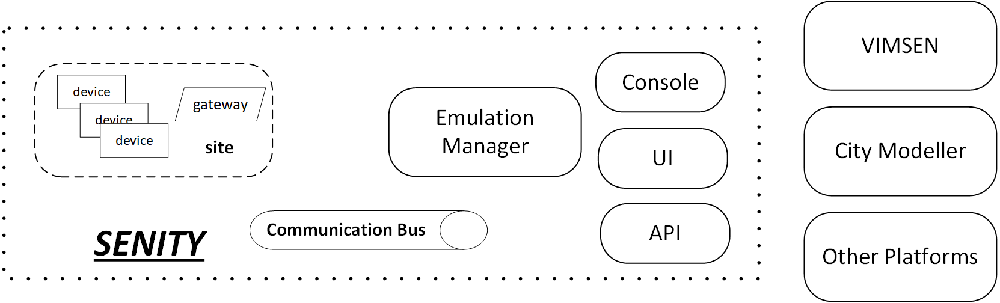

SENITY: Smart Energy in the City
Introduction
SENITY is an emulator for smart energy deployments targeting city environments. In this context, it can emulate sites (apartments, buildings etc) that contain a smart energy meter, smart energy devices and appliances and any kind of renewable sources. SENITY is by design enabled to interact (or even integrate) with actuall energy related systems for DR, forecasting and energy pricing, real devices capable of reporting their energy profiles and to receive commands and other kind of energy related hardware and software systems. In this way it is possible to evaluate the operational, functional, algorithmic behaviour and performance of the respective entities in emulated large scale setups, where various scenarios (weather, energy usage) can be easily configured.
Architecture
The overall architecture of the system is presented in the following figure. Generally, most entity have two parts (logical or actual), one that relates with the emulation and the one that relates to the actual device or site behavior.

Three basic design variations can be considered for the device, smart meter/gateway, site entities:
- "allInOne" where all these entities are emulated through a single program (e.g., a process)
- "oneToOne" where all these entities are emulated through different programs (e.g., different processes running in a container)
- "realOne" where all or some of these entities are actual ones: e.g. an actual device, an openhab gateway (or even a VIMSEN ldrm etc.)
Also, Devices can operate in various modes based on the configuration received so as to reflect energy consumption or production of actual devices:
- continuous: a device may follow a daily scenario (e.g. expressed in a mathematical form)
- periodic: operate at particular time periods (in the day, in the week etc) with particular consumption profile when it is on
- conditional/eventful: where the consumption or production of a device depends on other factors (e.g. weather).
In any case a device can be set on or off by hand (e.g., through the senity-console, or senity-ui) or by a VIMSEN like system.
All the entities interact through the Communication Bus, exchanging measurements and commands, with the exception of the devices that is possible also to communicate and be controlled through the gateway or smart meter. In this case the gateway or smart meter will translate commands (e.g. read from the communication bus) to specific commands (e.g., netconf) for the devices, hiding in this way the devices' particularities. (This is also what happens in VIMSEN with ldrm though in practice everything happen through the MQTT broker that acts as a communication bus).
The Communication Bus in the simplest form can be an mqqt broker, or multiple ones (e.g. one for the emulation-configuration data and one of the "actual" data) or sth more advanced like an Apache Kafka.
The Emulation Manager is responsible for setting up a particular scenario with a number of houses, devices and energy profiles. We can consider two modes of emulation operation:
- centralized: where all emulation decision on,off,advertized consumption/production is centrally decided (which actually does not seem very nice)
- distributed: where the emulation manager sends configuration parameters and the devices/sites "act" autonomously.
The City Modeler is not actually part of SENITY but is referenced here for completeness purposes. The City Modeler emulates/models a city and events like weather, the movement of population, city density, damage in particular areas etc. It could interface, integrate or embed a city game (like simcity). The modeler's static or dynamic data are received from the Emulation Manager and "translated" to emulation configurations (on, off, consumption, production etc), using the devives' conditional/eventful mode of operation. Of course the exact details of what is decided on the City Modeler and what on the Emulation Manager is a matter of further dicussion.
Operational Flow
The overall operation flow of SENITY is described below:
- A scenario is defined in json/xml/yang or any other format, utilizing on existing site and device configurations
- The emulator reads the scenario and creates the respective emulated entities (sites, devices)
- The emulator passes through the communication bus the necessary conf info and configures the other software components (e.g. db, communication bus)
- The sites are initiated and start operating sending consumption data and reacting to commands
- Events (weather, time of day etc, on/off commands) are send by the emulator through the communication bus and the devices act accordingly
Proof of Concept (PoC)
Code and Implementation
The Proof of Concept (PoC) is implemented in Python and is hosted in bitbucket:
- Sites (allInOneSite.py) follow the allInOne mode of operation and each site is represented as a single process. The devices operate in continuous mode.
- The emulation manager (emulationManager.py) operates in distributed mode.
- The senity-console (senity.py) is provided for interacting with the emulation environment
- The emulation is initated through the senity.py
- The communication bus is a mqtt broker (Mosquitto).
Configuration files
SENITY has a configuration file:
# this is the configuration file for senity
[General]
# the folder where device profiles are located
devices_folder = devices
# the folder where site descirptions are located
sites_folder = sites
# the file holding the log file, if empty logging is disabled
log_file = senity.log
# the waiting time for a console command, which interacts with the mqtt
console_cmd_waiting = 10
# the mqtt broker ip and port
mqtt_broker_ip = 127.0.0.1
mqtt_broker_port = 1883
In the PoC for simplicity reasons we do not have a db instead local jsons hold the necessary information. In particular, the following json files are defined:
In a device json file, the avgConsomption is in watts, while the workingCycle indicates whether the device operates 24/24 or a shorter cycle every time it is invoked e.g. 5/24. InitialStatus indicates whether the device is on(1) or off (0) when the emulations is started or by default. updateInterval is the interval with which measurement are sent by the device, and overide the per site updateInterval. In PoC the updateInterval (per device) and workingCycle parameters are not used, instead all the devices update interval is defined throuh the corresponding command sent from the emulation manager for the whole site, while each device working cycle is considered 24/24.
{
"name" : "aircondition01",
"type" : "aircondition",
"status": 1,
“updateInterval: 10”
"avgConsumption": 1100,
"workingCycle": 5
}
A site json file defines a particular site and the number of devices in it
{ "siteName": "site01",
"devicesAvailable":
[
{"deviceName": "oven01", "deviceCounter": 1},
{"deviceName": "fridge01", "deviceCounter": 1},
{"deviceName": "aircondition01", "deviceCounter": 3},
{"deviceName": "dishwasher01", "deviceCounter": 1}
]
}
The scenario json
{
"scenarionName": "scen01",
“updateInterval”: 10,
"sitesAvailable":
[
{"siteName": "site01", "siteCounter": 10 },
{"siteName": "site02", "siteCounter": 20 }
]
}
Communication messages
Communication takes places using the communication bus and respective messages are exchanged between the various entities. Third party entites (like VIMSEN, City Modeler) can interact with SENITY through the communication bus in order to receive the status and send commands. Messages exchanged are:
- for configuration purposes
- for scenario setup purposes
- for applying on/off commands
- for advertising the measurements
In particular, the following topics are used in PoC, while their exact format can change through the constants.py (aka con) file :
- Topic: con.TOPIC_SITE_DEVICES_CONF/<site id>, message: An array of the site’s devices’ json files, retain: true, type: emulation related
This is published from the Emulation Manager and is read by the respective site. We used this way of initially configuring the site entities (instead of giving input parameters) as a more generic approach that can also be used in other modes of operation, except the “all in one” sites. Also, in this way it is also possible to change/update the configuration of a site. This is retained so it is possible for a site to reinitialize after a possible restart, without the Emulation Manager to sent anything, while this message can (and it actually is) be used by UI/CLI/API to get the available sites, devices and their status.
- Topic: con.TOPIC_SITE_CONF/<site id>, message: Update interval, retain: true, type: emulation related
This is published from the Emulation Manager and is read by the respective site. It indicates the interval with which measurement are sent from the site’s devices, assuming a single interval for all devices. Other site related parameters can also be passed this way.
- Topic: con.TOPIC_SITE_DEVICE_STATUS/<site id>/<device id>, message: 0/1, retain: false, type: operation related
This is published from any entity to switch on/off a device. This also leads to updating the site’s devices configuration by the device (not the Emulation Manager as before) sending an updated con.TOPIC_SITE_DEVICES_CONF message
- Topic: con.TOPIC_SITE_DEVICE_CONSUMPTION, message: energy consumption, retain: false, type: operation related
This is published from a device, advertising its current energy consumption.
Installation
First install and start Mosquitto mqtt broker. Then get the source code files from bitbucket and try to run SENITY.
A number of python related libraries will be probably missing (paho.mqtt, prompt_toolkit, apscheduler).
Usage
In what follows we present an example use of SENITY through the senity-console.
linux:~/senity$ python senity.py -c senity.conf -s scenarios/emuScenario01.json
senity> help
Available commands: ['sites', 'site', 'device_on', 'device_off', 'device_consumption', 'help', 'exit']
senity> sites
. . . . . . . . . .
Sites found: [0, 1]
senity> site 0
. . . . . . . . . .
Devices found in Site 0 :
["{0: {u'status': 0, u'name': u'oven01', u'workingCycle': 3, u'updateInteval': 10, u'avgConsumption': 3000, u'type': u'oven'}, 1: {u'status': 1, u'name': u'fridge01', u'workingCycle': 24, u'updateInteval': 10, u'avgConsumption': 350, u'type': u'fridge'}, 2: {u'status': 1, u'name': u'fridge01', u'workingCycle': 24, u'updateInteval': 10, u'avgConsumption': 350, u'type': u'fridge'}, 3: {u'status': 1, u'name': u'aircondition01', u'workingCycle': 5, u'updateInteval': 10, u'avgConsumption': 1100, u'type': u'aircondition'}, 4: {u'status': 1, u'name': u'aircondition01', u'workingCycle': 5, u'updateInteval': 10, u'avgConsumption': 1100, u'type': u'aircondition'}, 5: {u'status': 1, u'name': u'aircondition01', u'workingCycle': 5, u'updateInteval': 10, u'avgConsumption': 1100, u'type': u'aircondition'}, 6: {u'status': 1, u'name': u'dishwasher01', u'workingCycle': 3, u'updateInteval': 10, u'avgConsumption': 1200, u'type': u'dishwasher'}}"]
senity> device_on 0/0
senity> site 0
. . . . . . . . . .
Devices found in Site 0 :
["{0: {u'status': 1, u'name': u'oven01', u'workingCycle': 3, u'updateInteval': 10, u'avgConsumption': 3000, u'type': u'oven'}, 1: {u'status': 1, u'name': u'fridge01', u'workingCycle': 24, u'updateInteval': 10, u'avgConsumption': 350, u'type': u'fridge'}, 2: {u'status': 1, u'name': u'fridge01', u'workingCycle': 24, u'updateInteval': 10, u'avgConsumption': 350, u'type': u'fridge'}, 3: {u'status': 1, u'name': u'aircondition01', u'workingCycle': 5, u'updateInteval': 10, u'avgConsumption': 1100, u'type': u'aircondition'}, 4: {u'status': 1, u'name': u'aircondition01', u'workingCycle': 5, u'updateInteval': 10, u'avgConsumption': 1100, u'type': u'aircondition'}, 5: {u'status': 1, u'name': u'aircondition01', u'workingCycle': 5, u'updateInteval': 10, u'avgConsumption': 1100, u'type': u'aircondition'}, 6: {u'status': 1, u'name': u'dishwasher01', u'workingCycle': 3, u'updateInteval': 10, u'avgConsumption': 1200, u'type': u'dishwasher'}}"]
senity> device_consumption 0/0
. . . . . . . . . .
Device 0/0 consumption :
['3000']
senity> device_off 0/0
senity> site 0
. . . . . . . . . .
Devices found in Site 0 :
["{0: {u'status': 0, u'name': u'oven01', u'workingCycle': 3, u'updateInteval': 10, u'avgConsumption': 3000, u'type': u'oven'}, 1: {u'status': 0, u'name': u'fridge01', u'workingCycle': 24, u'updateInteval': 10, u'avgConsumption': 350, u'type': u'fridge'}, 2: {u'status': 1, u'name': u'fridge01', u'workingCycle': 24, u'updateInteval': 10, u'avgConsumption': 350, u'type': u'fridge'}, 3: {u'status': 1, u'name': u'aircondition01', u'workingCycle': 5, u'updateInteval': 10, u'avgConsumption': 1100, u'type': u'aircondition'}, 4: {u'status': 1, u'name': u'aircondition01', u'workingCycle': 5, u'updateInteval': 10, u'avgConsumption': 1100, u'type': u'aircondition'}, 5: {u'status': 1, u'name': u'aircondition01', u'workingCycle': 5, u'updateInteval': 10, u'avgConsumption': 1100, u'type': u'aircondition'}, 6: {u'status': 1, u'name': u'dishwasher01', u'workingCycle': 3, u'updateInteval': 10, u'avgConsumption': 1200, u'type': u'dishwasher'}}"]
senity> device_consumption 0/0
. . . . . . . . . .
Device 0/0 consumption :
[]
senity>
Other issues/thoughts
- Installation procedures will be reconsidered, while a containirized version of SENITY is also in our plans.
- Add device profiles, express consumption in mathematic way through a scripting like manner
- In the OneToOne scenario all the software can be hosted in a container, that represents a house/site, utilizing the possibilities for creation of networks. This may also enable to put network delays etc.
- Consider scalability issues and how to handle millions of houses. 10k container per server have been reported as an extreme case for containers.
- In oneToOne mode the device characteristics could be expressed through Yang \& configured through netconf.